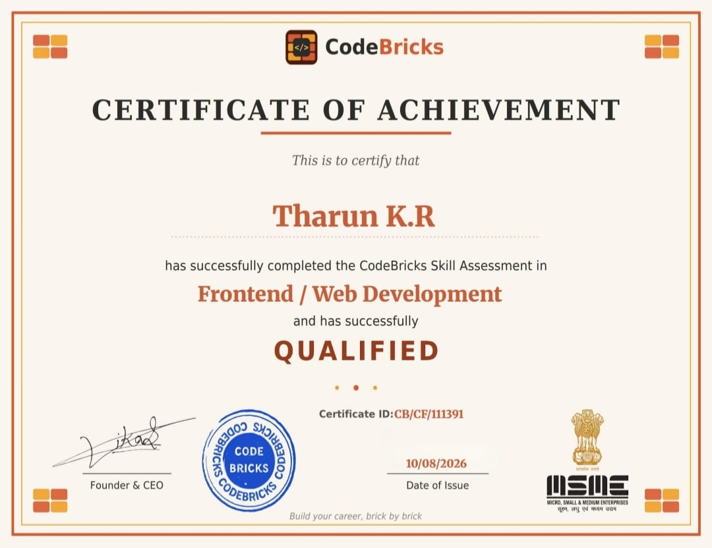
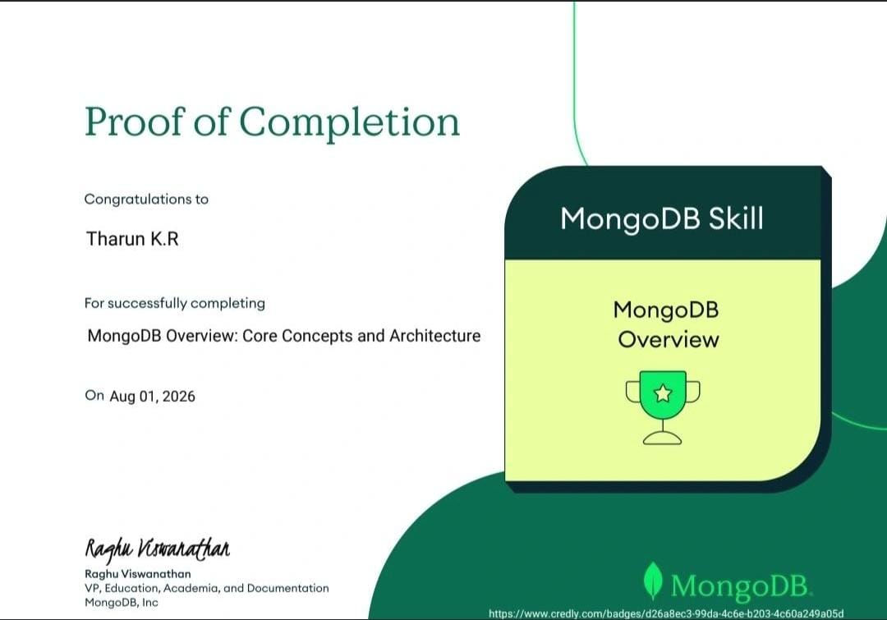
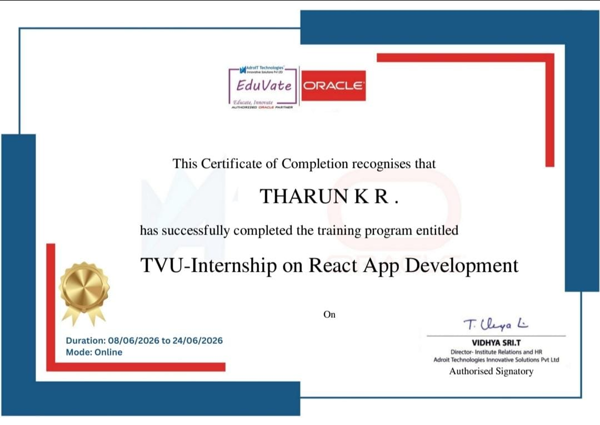
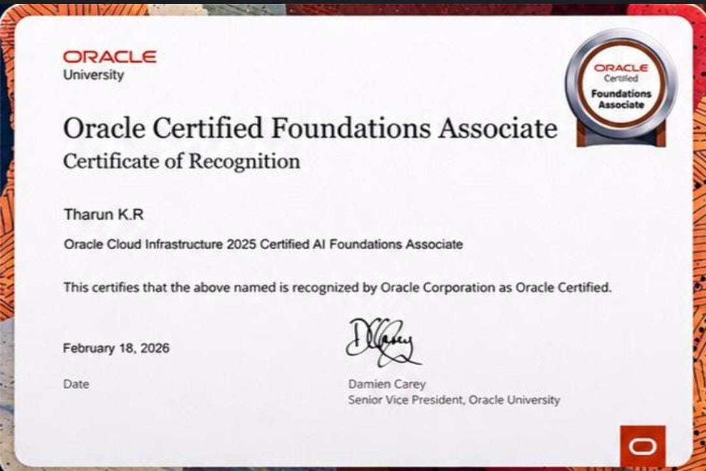

Hii! I am Tharun K.R, I'm currently pursuing Bachelor's degree of
Computer Applications at SKP Arts and Science College Tiruvannamalai.
Recently I had completed my React App development Internship at AdroIT
Technologies collaborate with Eduvate and Oracle. I am currently leaning
a 100 Days Challenge of Front Development.
Student Marksheet Calculator is used to calculate the student marks in
Grade, CGPA, Percentage. It is also created by HTML,CSS, and JavaScript.
Job Portal with Search & Filters project is used to real time job search
through the real company websites using API, HTML, CSS, and JavaScript.
| S.No | Certificate | Certification |
|---|---|---|
| 1 |
 |
|
| 2 |
 |
|
| 3 |
 |
|
| 4 |
 |
Here are some of the resources that I have used to learn Frontend Development:
I'm currently pursuing Bachelor Degree of Computer Applications at SKP
Arts and Science College Tiruvannamalai under the Thiruvalluvar University.
Email: tharun2349@gmail.com
Phone: +91 09876 54321
LinkedIn GitHub